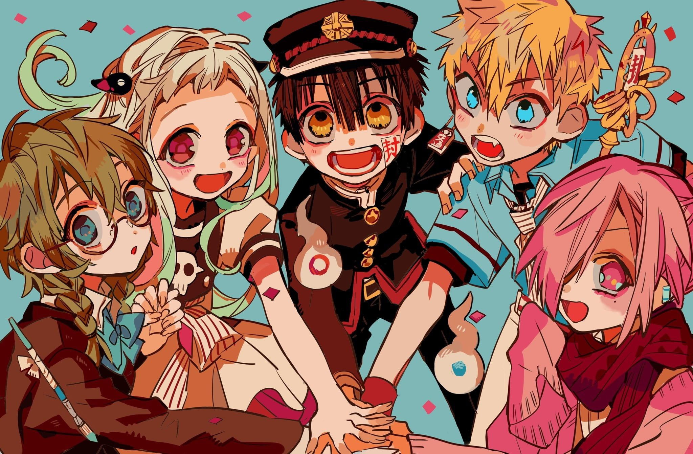

Anime
Demon Slayer

PERSONAGGI:
- Tanjiro
- Zenitsu
- Inosuke
- Nezuko
Descrizione storia e personaggi:
Tanjiro, un ragazzo determinato con sua sorella Nezuko diventata un demone che però resiste alla tentazione del sangue. Zenitsu, un ragazzo che all'apparenza è fifone, ma in realtà è l'esatto contrario. Infine Inosuke, con il copricapo da cinghiale, che pensa di essere molto figo e si butta sempre a capofitto in ogni occasione. Da qui inizierà il loro viaggio, cosa succederà?
Anime
Hanako-kun e i sette misteri dell'accademia Kamone
PERSONAGGI:
- Hanako
- Nene Yashiro
- Kou Minato
- Mitsuba
Descrizione storia e personaggi:
Yashiro, una ragazza che desidera essere ricambiata dal proprio amore per Minamoto-senpai, sente parlare del settimo mistero: un’entità che risiede nel terzo bagno e può esaudire un desiderio in cambio di qualcosa. Yashiro decide di esplorare il bagno e bussa alla porta del terzo bagno. Cosa succederà? Hanako è solo una leggenda metropolitana o esiste veramente?